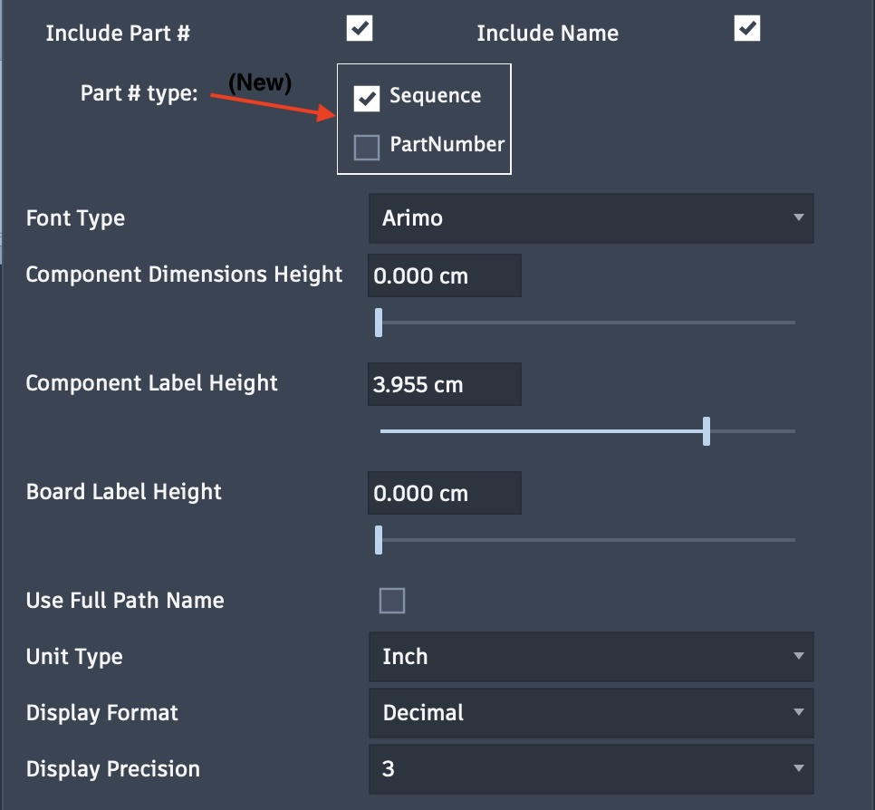

Map Labeling
- Labeling and Relabeling Maps
Map labeling can provide board and component names, dimensions and component part numbering. These same options are available for map creation and with post-mapping tasks.
Note: Recent changes in Fusion will automatically assign a PartNumber property to each component. This number is basically a 23-character date-timestamp. You can optionally include this part number or a sequential part number unique to the board as described below with the Include Part # option.
Labeling Options:
Labels: Check this option to enable labeling on the map. If unchecked, all labeling options will be hidden.
- Include Part #: When checked, the following options will be displayed:
Sequential number parts on a board
PartNumber to include the PartNumber property of the component
Include Name: The source component name will be included for each component on the map.
Font Type: The font can be selected for the text labels. Font types include most type available on the system including single-line fonts.
Component Dimension Height: Sets height from 0 to a maximum of 5 centimeters, 0 to hide.
Component Label Height: Sets height from 0 to a maximum of 5 centimeters, 0 to hide. Options to include a component part number, name or both.
Board Label Height: Sets height from 0 to a maximum of 5 centimeters, 0 to hide.
Use Full Path Name: When selected, the full path is used to describe components.
Unit Type: Set the unit type for dimensions, such as centimeters or inches.
Display Format: Available when unit type is set to inches. Options include fractional or decimal display.
Display Precision: A selection of 0-3 when decimal or 1/16 to 1/64 when fractional.

{kind=link}